第 1 题
CPU 的主要功能不包括（ ）。
A． 指令控制 B． 操作控制 C． 数据存储 D． 时序控制 答案与解析 答案：C
CPU的主要功能包括指令控制（控制程序的执行顺序）、操作控制（产生控制信号控制部件执行操作）、时间控制（对各种操作进行时间上的控制）和数据加工（对数据进行算术和逻辑运算），而数据存储主要由存储器完成，C错误。
教材第 89 页 第 2 题
下列寄存器中，应用层程序员一定可直接读写的是（ ）
A． 程序计数器（PC） B． 变址寄存器 C． 栈顶指针寄存器（SP） D． 页基址寄存器（PTBR） 答案与解析 答案：B
A 选项：首先需要注意一点，不管是应用程序员还是汇编程序员，都不能直接读写程序计数器（PC），它的值一般是由硬件自动更新（如取指后自增）或通过跳转指令间接修改（如jmp、call），因此我们说PC 对于汇编程序员可见（2010 真题），袁书说法：PC PSW 属于用户部分可见寄存器；从另一个角度说，例如中断响应保存断点（PC PSW），之所以我们通过硬件压栈保存，而不是像现场信息（通用寄存器等）通过软件保存（例如通过汇编指令mov等保存），这个也是重要原因；注意，PC 是X86 里的程序计数器，而像MIPS 架构里，通常使用ra 寄存器作为程序计数器，此时的ra 寄存器由于可以通过汇编指令显式保存，因此ra 对于汇编程序员来说，可直接读写； B 选项：变址寄存器（如x86 中的SI、DI，或通用寄存器用作变址）是用户级通用寄存器，通常用于变址寻址，面向用户，可用于访问字符串、数组、表格等成批数据或其中的某些元素；变址寻址时，指令中提供的形式地址是一个基准地址，位移量由变址寄存器给出，因此应用程序员可直接读写； C 选项，当CPU 处于用户态时，SP 指向用户栈栈顶，此时应用层程序员可直接读写，当CPU 处于内核态时，SP 指向内核栈栈顶，此时应用层程序员没有权限读写，只有系统程序员可以读写； D：PTBR 存放的是页表的起始地址，页表属于内核数据结构，那PTBR 肯定只能由OS 内核进行读写；
教材第 89 页 第 3 题
下列属于系统级程序员可见的有（ ）个
A． 4 B． 5 C． 6 D． 7 答案与解析 答案：C
Ⅰ.程序状态字寄存器（PSW, Program Status Word）可见，这是系统级程序员用来控制和查看处理器状态的寄存器，比如中断标志、状态标志等。其内容由CPU 根据指令执行结果自动设定，用户程序执行过程中可能会隐含读取到其部分内容（如OF CF 等溢出标志位），以确定程序的执行顺序（例如跳转指令进行转移条件判断），但是不能直接修改PSW 寄存器的值；
教材第 89 页 第 4 题
增加通用寄存器的数量，有哪些好处？
A． Ⅰ.Ⅳ. B． Ⅰ.Ⅲ.Ⅳ. C． Ⅰ.Ⅱ.Ⅳ. D． Ⅰ.Ⅱ.Ⅲ.Ⅳ. 答案与解析 答案：C
Ⅰ.减少访问主存的次数：更多寄存器允许更多数据暂存于CPU 内部，减少对慢速主存的访问。
教材第 89 页 第 5 题
CPU 中的寄存器的具体设置与指令集及其实现方式有较大关系，下列哪些寄存器不是必需设置的（）
A． Ⅳ.Ⅴ. B． Ⅲ.Ⅳ.Ⅴ. C． Ⅰ.Ⅲ.Ⅳ.Ⅴ. D． Ⅰ.Ⅱ.Ⅲ.Ⅳ.Ⅴ. 答案与解析 答案：C
PSW 用于存储状态标志（如零标志、进位标志等），但并非所有指令集都依赖状态标志。例如，在MIPS 架构中，分支指令直接比较寄存器值，而不使用状态标志，因此PSW 不是必需设置的。程序计数器(PC)：用来保存下一条要执行的指令的地址，这个是必须的，因为CPU 需要知道从哪里取下一条指令，否则无法顺序执行或处理跳转。所以PC 肯定是必须的。指令寄存器(IR)：用于存储当前正在执行的指令。在单周期CPU 设计中，指令直接从指令存储器 （或指令cache）中获取并立即执行，而不需要显式的IR寄存器（例如，指令位直接连接到控制逻辑）。因此，IR 不是必需设置的，取决于实现方式。存储器数据寄存器(MDR)：用于在CPU 和内存之间传输数据。在指令集设计中，如果内存访问通过通用寄存器直接处理（如在load-store 架构中），则MDR 不是必需设置的。它通常作为内存接口的缓冲，但可通过其他方式实现。存储器地址寄存器(MAR)：用于存储要访问的内存地址。类似地，如果地址可直接从通用寄存器或ALU 输出驱动到地址总线，则MAR 不是必需设置的。
教材第 89 页 第 6 题
下列关于寄存器位数的说法中，错误的是（ ）
A． PC 一定与主存地址总线位宽相等 B． 定长指令字系统中，IR 一定与指令字宽度相等 C． MAR 位宽一定与系统总线中的地址总线位宽相等 D． MDR 一定与系统总线中的数据线宽度相等 答案与解析 答案：A
PC（程序计数器）存储下一条指令的地址，其位宽通常与主存地址总线位宽相关，但不一定相等。反例： x86 实模式中，物理地址由段地址（16 位）左移4 位加上偏移量（16 位）组成，形成20 位物 • 理地址。此时PC（IP）为16 位，而地址总线为20 位，PC 位宽小于地址总线位宽。 •指令对齐优化：某些架构中，指令按字对齐（如4 字节对齐），PC 的低位固定为0（如ARM中PC 的最低2 位为0），此时PC 的有效位数可能少于地址总线位宽。因此PC 的位宽可能小于或等于地址总线位宽，但不一定相等，因此选项A 错误。在定长指令字系统（如MIPS、ARM）中，所有指令长度固定（如32 位），IR 的位宽必须等于指令字宽度，以完整保存指令。 MAR（内存地址寄存器）保存当前访问的内存地址，其位宽需覆盖整个物理地址空间。地址总线位宽决定了可寻址的物理地址范围，因此MAR 的位宽必须与地址总线位宽相等。 MDR（内存数据寄存器）暂存从内存读取或写入的数据，其位宽需与数据总线宽度匹配，以保证一次传输完整的数据单元。例如，若数据总线为64 位，MDR 也需为64 位，以避免多次传输。（虽然理论上MDR 可以和数据总线宽度不一样，但是408 范围内可以认为他们相等）
教材第 90 页 第 7 题
关于程序计数器PC 的叙述中，正确的是（ ）
A． Ⅲ.Ⅳ.Ⅴ. B． Ⅱ.Ⅲ.Ⅳ.Ⅴ.Ⅵ C． Ⅲ.Ⅳ.Ⅴ.Ⅵ. D． Ⅰ.Ⅱ.Ⅲ.Ⅳ.Ⅴ.Ⅵ. 答案与解析 答案：C
Ⅰ错误。程序计数器（PC）的值在向后跳转（如循环或分支到较低地址）时会变小。例如，在循环结构中，PC 可能跳转到之前的地址，导致值减小。 Ⅱ错误。顺序执行时，PC 的增加值取决于指令的长度（以字节为单位），而非总是加1。例如：在固定长度指令集（如RISC-V，指令长度4 字节）中，PC 自动加4。 • • 在变长指令集（如x86）中，PC 根据具体指令大小增加（可能加1、2 或更多）。 Ⅲ正确。无条件转移指令（如jump）直接修改PC 为指定的目标地址，执行后PC 的值即为转移目标地址。 Ⅳ正确。调用指令（如call）将返回地址压栈后，立即跳转到被调用过程的入口地址，因此执行后PC 的值就是入口地址。 Ⅴ正确，条件转移指令（如je、jne）根据PSW（程序状态字）中的标志位（如CF、OF、ZF）决定行为： •如果条件满足，PC 更新为转移目标地址。如果条件不满足，PC 顺序更新为下一条指令地址（PC +指令长度）。 •
教材第 90 页 第 8 题
下列有关CPU 时钟信号的叙述，错误的是（ ）。
A． 处理器总是每来一个时钟信号就开始执行一条新的指令 B． 边沿触发指状态单元总在时钟上升沿或者下降沿开始改变状态 C． 时钟周期以相邻状态单元之间最长组合逻辑延迟为基准确定 D． 每个时钟周期成为一个节拍，机器的主频就是时钟周期的倒数 答案与解析 答案：A
处理器根据自身的时钟信号来对指令的执行进行定时，但是并不是每一个时钟信号就开始执行一条新的指令，例如在多周期处理器（非流水线）中，一条指令的执行需要分解成多个阶段进行，每个阶段在一个时钟周期内完成一个特定的功能，因此每来一个时钟开始执行一个阶段性操作，A错误。每来一个时钟开始进行阶段性操作，因此必须确定时钟的那一刻算开始，通常这个开始点或是时钟信号的上升沿或是下降沿，称为触发边沿。触发器或寄存器等状态元件总是在触发边沿开始改变状态， B正确。为保证每个阶段的操作都能在一个时钟周期内完成，时钟周期必须足够长，以保证数据在最长延迟的组合逻辑电路中能够传输完成。因此时钟周期以相邻状态单元最长组合逻辑延迟为基准确定，C正确。 D显然正确。
教材第 90 页 第 9 题
下列有关指令周期的叙述中，错误的是（ ）。
A． 一个指令周期可由若干个机器周期或时钟周期组成 B． 单周期CPU 中的指令周期就是一个时钟周期 C． 乘法指令和加法指令的指令周期总是一样长 D． 指令周期的第一个阶段一定是取指令阶段 答案与解析 答案：C
A.正确，指令周期是指CPU 执行一条完整指令所需的时间，它可以被分解为多个机器周期（如取指周期、执行周期等）或更细粒度的时钟周期（CPU 时钟的基本单位）。 B.正确，在单周期CPU 设计中，所有指令（包括加法和乘法）都在一个时钟周期内完成，因此指令周期等同于一个时钟周期。时钟周期的长度通常根据最复杂指令（如LOAD 指令）的延迟来设定，以确保所有指令都能在一个周期内完成。 C.错误，指令周期的长度取决于指令的复杂度和CPU 的设计： •在单周期CPU 中，所有指令周期长度相同（即一个时钟周期），但加法指令通常比乘法指令简单，时钟周期的长度可能被拉长以适应乘法指令，导致效率较低。 • 在多周期CPU 或流水线CPU 中，不同指令的执行时间通常不同：加法指令可能只需一个或几个时钟周期，而乘法指令由于涉及更复杂的操作（如迭代计算），可能需要更多时钟周期。因此，乘法指令和加法指令的指令周期并不总是一样长。 D 正确，无论指令类型如何，CPU 执行任何指令的第一步都是从内存中取出指令，然后才能进行解码、执行等后续阶段。这是指令执行的基本流程。
教材第 90 页 第 10 题
设PC、MAR、IRA、MDR、Ri 等分别表示CPU 中的程序计数器、存储器地址寄存器、指令寄存器中的形式地址字段、存储器数据寄存器和通用寄存器。从寻址方式的角度考虑，以下可能存在的操作是（）
A． Ⅰ.Ⅱ B． Ⅰ.Ⅱ.Ⅲ C． Ⅱ.Ⅲ.Ⅳ D． Ⅰ.Ⅱ.Ⅲ.Ⅳ. 答案与解析 答案：D
Ⅰ. MAR←Ad（IR）：将指令中的形式地址字段的值传输到存储器地址寄存器 （MAR），直接寻址和间接寻址都是可能的。
教材第 90 页 第 11 题
下列关于指令周期的划分中，说法错误的是（ ）
A． 若当前CPU 的指令集中，指令的操作数大多数采用间接寻址方式，那么指令周期可划分为取指周期、间址周期、执行周期和中断周期等 B． 若当前CPU 的指令集中，指令的操作数大多数采用寄存器寻址，那么指令周期可划分为取指/ 译码周期、执行周期、写回周期和中断周期等 C． 如果指令涉及两个源操作数，且不能并行读取操作数，那么指令周期中可能有两个取数周期 D． 当CPU 的操作控制器是微程序控制器时，间址周期的微程序是微程序控制器直接提供 答案与解析 答案：D
B.正确，寄存器寻址（如ADD R1, R2）的操作数直接来自寄存器，无需访存取操作数。，因此不需要单独的取数周期（"取数周期"特指从内存取操作数） D.错误，取指周期的微程序是微程序控制器直接提供，而间址周期的微程序或执行周期的微程序，都是在取指周期过去后，译码器分析指令操作码之后得到的
教材第 91 页 第 12 题
早期的CPU 里面因为没有引入cache，所以每个指令周期都要执行一次或多次总线操作，以访问主存读取指令或进行数据的读写，因此将指令周期划分为若干机器周期，每个机器周期对应CPU 的一系列内部操作或者某种总线事务类型，一个总线事务访问一次主存或者I/O 接口。下列说法中，错误的是（）
A． 一个总线事务中，可能需要送地址和读写命令、等待主存进行读写操作，需要多个时钟周期才能完成，因此一个机器周期由多个时钟周期组成； B． 由于存储器的读/写事务花费的时间比CPU 的内部操作时间短的多，因此机器周期的宽度通常以CPU 内部操作花费的时间作为基准来确定； C． 早期三级时序系统中，所有指令的指令周期相同、机器周期数相同，机器周期所包含的节拍数也是固定的； D． 现代计算机引入cache 后，大多数情况不需要访问主存，从cache 中即能读取指令或数据，因此一般采用以时钟周期信号进行定时的变长指令周期，每个指令周期直接由若干时钟周期组成，而不再使用机器周期这个概念。 答案与解析 答案：B
B 错误，存储器的读/写事务（访问主存）通常比CPU 内部操作（如寄存器访问或ALU 计算）慢得多（内存访问延迟大）。因此，机器周期的宽度（即持续时间）应以存储器访问时间为基准来确定，以确保有足够时间完成内存操作。如果以CPU 内部操作时间为基准，机器周期会太短，无法完成内存访问，导致错误。早期设计中，机器周期的长度常由内存速度决定。 C 正确，早期三级时序系统（指令周期、机器周期、时钟周期）中，为简化设计，许多系统采用固定时序：所有指令有相同指令周期、相同机器周期数（如取指、执行等），且每个机器周期包含固定数量的时钟节拍（T-states）。 D 正确，现代CPU 引入cache 后，无需慢速主存访问。因此，指令周期是变长的（不同指令执行时间不同），直接由时钟周期组成，不再需要“机器周期”这一概念（机器周期原是为管理慢速内存总线事务而设）。
教材第 91 页 第 13 题
在指令执行的间址周期中，CPU 完成的主要操作是（ ）。
A． 从主存取出指令 B． 分析指令的操作码 C． 获取操作数的有效地址 D． 执行指令的操作 答案与解析 答案：C
间址周期是指当指令采用间接寻址方式时，CPU获取操作数有效地址的过程，C正确。
教材第 91 页 第 14 题
指令译码器的输入是（）
A． ID B． IR C． Ad(IR) D． Op(IR) 答案与解析 答案：D
指令译码器对指令的操作进行译码，所以选D。
教材第 91 页 第 15 题
已按勘误修正
随着超大规模集成电路技术的发展，更多的功能逻辑被集成到CPU 芯片中，但是，不管CPU多复杂，它都可看成由数据通路和控制部件两大部分组成，下列部件中，属于数据通路的有多少个？
A． 5 B． 6 C． 7 D． 8 答案与解析 答案：C
通常将指令执行过程中数据所经过的路径，包括路径上的部件称为数据通路。ALU、通用寄存器、状态寄存器、Cache、MMU、浮点运算逻辑、异常和中断处理逻辑等都是指令执行过程中数据流经的部件，MDR 和 MAR 是CPU和主存进行数据交互的寄存器，也属于数据通路的一部分。
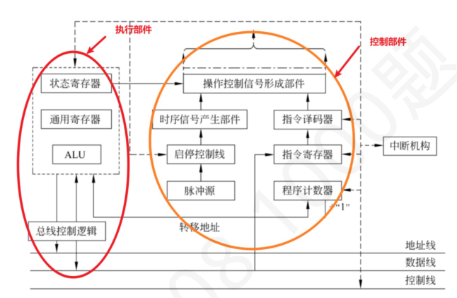
勘误：解析已按勘误替换
教材第 91 页 第 16 题
数据通路的基本功能是（ ）。
A． 存储程序和数据 B． 实现CPU 内部的运算和数据传输 C． 控制指令的执行顺序 D． 提供指令执行所需的控制信号 答案与解析 答案：B
数据通路是CPU中实现数据流动和处理的路径，主要功能是实现CPU内部的运算（如ALU运算）和数据传输（如寄存器之间、寄存器与ALU之间的数据传输），B正确；存储程序和数据是存储器的功能，A错误；控制指令执行顺序是控制器的功能，C错误；控制信号（如RegWrite, ALUOp）由控制单元生成，而非数据通路。数据通路被动响应控制信号（如根据ALUOp执行加法），但不产生控制信号，D错误。
教材第 92 页 第 17 题
在单周期数据通路中，每条指令的执行时间（ ）。
A． 相同，等于最长指令的执行时间 B． 相同，等于最短指令的执行时间 C． 不同， D． 不同，取决于指令的操作数数量取决于指令的复杂程度 答案与解析 答案：A
在单周期数据通路中，所有指令的执行时间相同，都等于最长指令的执行时间，以确保所有指令都能在一个时钟周期内完成，A正确。
教材第 92 页 第 18 题
下列关于时钟周期的说法中，错误的是（ ）图3
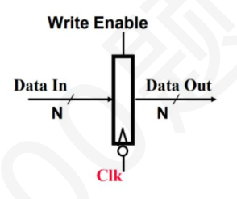
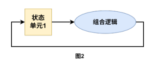
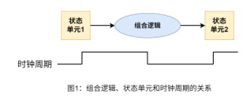
A． 如图所示，所有信号在一个时钟周期内从状态单元1 经组合逻辑到达状态单元2，信号到达状态单元2 稳定后所需的时间决定了时钟周期的长度。 B． MIPS 单周期数据通路中，由于寄存器堆在一个时钟周期内既要写入又要读出，因此即使该数据通路采用边沿触发方式写入，也至少包含一份寄存器堆的备份； C． 若采用图2 所示的边沿触发的方法可以在一个时钟周期内读出一个寄存器的值并使之经过一些组合逻辑，再将别的值写入该寄存器； D． 图3 中的寄存器除了输入端和输出端，还有一个写使能端口，如果该寄存器在每个有效的时钟边沿都进行写入操作，则可以舍弃掉写使能对应的引脚； 答案与解析 答案：B
A 正确，这也可以看作是时钟周期的定义，和19 年真题中“时钟周期以相邻状态单元间组合逻辑电路的最大延迟为基准确定”的含义一样； B 错误，MIPS 数据通路中，寄存器堆的边沿触发写入和异步读出机制已经处理了同一个周期内的读写操作，不需要额外的备份。读写同一个寄存器时，读出自然得到旧值，写寄存器是根据时钟结束时的时钟沿时候进行数据更新，不影响时钟内的读操作，无需备份。 【补充】：寄存器堆的操作特性： •在MIPS 数据通路中，寄存器堆（register file）通常有两个读端口和一个写端口。 • 写入操作：使用边沿触发（例如，时钟上升沿），在时钟边沿瞬间更新寄存器内容。 • 读出操作：是组合逻辑（异步），输出基于输入的地址立即响应，不需要时钟边沿。 • 在同一个时钟周期内，寄存器堆可以同时进行读和写操作（例如，一条指令读取源寄存器并写入目的寄存器）。 C 正确，时钟周期内的操作流程何为边沿触发寄存器：在时钟信号（如上升沿）瞬间捕获输入数据，并保持该值直到下一个时钟沿。读取的是上一周期存储的值（时钟沿前的状态），写入的是下一周期的值（时钟沿后更新）。因此同一时钟周期内，前半段组合逻辑用寄存器的旧值计算，后半段计算结果作为新值在时钟沿被写入寄存器。另外注意：从寄存器输出→组合逻辑计算→到达下一寄存器输入的时间，必须<一个时钟周期，否则导致时序违例。（软硬件原理原文补充：在这种设计下，必需保持时钟周期足够长，以使得当有效的时钟边沿到来之时，输入已经稳定。状态单元的改变由时钟边沿触发，所以不可能在一个时钟周期之内出现反馈） D 正确；补充：如果该寄存器不是每个时钟周期都进行修改，那么它就需要这个写控制信号，写使能和时钟都是输入信号，只有当写使能有效并且时钟边沿到来之时，状态单元才改变状态；
教材第 92 页 第 19 题
已按勘误修正
数据通路由组合逻辑元件（操作元件）和时序逻辑元件（状态元件）组成。下列给出的元件中，属于操作元件的是（）。
A． Ⅰ.Ⅲ.Ⅴ B． Ⅰ.Ⅲ.Ⅴ.Ⅵ. C． Ⅰ.Ⅱ.Ⅲ.Ⅳ.Ⅴ.Ⅵ D． Ⅰ.Ⅲ.Ⅵ 答案与解析 答案：B
组合逻辑元件的输出只取决于当前的输入，组合电路不含存储信号的记忆单元。组合电路的定时不受时钟信号的控制，所有输入信号到达后，经过一定的逻辑门延迟，输出端的值被改变，并一直保持其值不变，直到输入信号改变。数据通路中常用的组合逻辑元件有多路选择器(MUX)、加法器(Adder)、算术逻辑部件(ALU)、译码器(Decoder)、三态门、符号扩展单元等；时序逻辑元件（状态元件）任何时刻的输出不仅与该时刻的输入有关，还与该时刻以前的输入有关，因而时序电路必然包含存储信号的记忆单元。寄存器、GPRS、理想存储器、cache 都属于时序逻辑元件。
勘误：D 选项已按勘误改为 Ⅰ.Ⅲ.Ⅵ。
教材第 92 页 第 20 题
下列关于多路选择器MUX 的说法中，正确的是（）（根据上下次序分别为图1，图2）
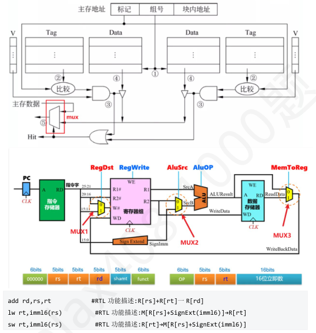
A． I、II、III B． II、IV、V C． I、II、V D． I、III、IV 答案与解析 答案：C
本题灵感来自于2024 年408 真题43 题的第二小问，属于单周期数据通路的考察，完全可以当大题做，难度较大，建议目标高分的同学务必理解整个数据通路不同指令数据的流向，控制信号的设置； Ⅰ正确，k 路选择器，应该有k 路输入，因而控制端S 的位数应该是\ left\ lceil log_2k\ right\ rceil ，例如，对于3路或4 路选择器，S 有两位；对于5-8 路选择器，S 有3 位。 Ⅱ正确，整个访存过程为
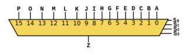
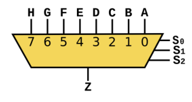
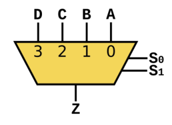
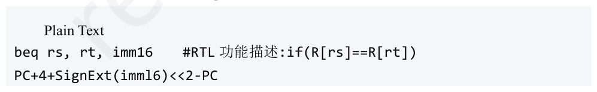
教材第 93 页 第 21 题
下列部件中，不需要控制器提供控制信号的是（ ）。
A． 算术逻辑部件（ALU） B． 多路选择器（MUX） C． 三态门 D． 指令译码器 答案与解析 答案：D
指令译码器不需要显式控制信号，可直接由输入的指令生成对应指令的逻辑信号，D错误；ALU的运算类是由控制器输出的ALU控制信号控制的，A正确；MUX的作用是从多个输入中选择一路输出，选择逻辑由选择信号决定。该选择信号由控制器生成，用于指定数据通路的走向，需要控制信号，B正确；三态门的使能信号由控制器发出，C正确。
教材第 94 页 第 22 题
下列关于数据通路的说法中，正确的是（ ）
A． Ⅰ．Ⅲ.Ⅴ B． Ⅰ．Ⅱ．Ⅲ.Ⅴ C． Ⅰ．Ⅲ.Ⅳ.Ⅴ D． Ⅰ．Ⅱ.Ⅲ.Ⅳ.Ⅴ 答案与解析 答案：A
Ⅰ.正确
教材第 94 页 第 23 题
下列关于控制信号的描述，错误的是（ ）。
A． 寄存器的写使能信号必须在时钟沿到来前稳定 B． 存储器的读信号通常在访存阶段的后半周期有效 C． ALU 的操作控制信号（ALUOp）在译码阶段生成并传递到执行阶段 D． 流水线阻塞（Stall）信号只需在译码阶段有效，无需传递到后续阶段 答案与解析 答案：D
阻塞译码阶段可以禁止新指令进入，但仍需阻塞执行及后续阶段来暂停当前指令推进，D错误；寄存器采用边沿触发（如时钟上升沿锁存数据），其控制信号需满足建立时间（SetupTime）要求，即在时钟沿到来前保持稳定，避免时序错误，A正确；存储器访问时，地址信号需先稳定（前半周期），再激活读信号（后半周期），以确保地址有效，B正确；在流水线中，译码阶段解析指令操作码，生成AluOp信号，并传递至执行阶段控制ALU操作，C正确。
教材第 94 页 第 24 题
如图是一个寄存器堆（通用寄存器组GPRs），它有三组数据接口：其中busA 和busB 是两组32 位的数据输出接口，busW 是一组32 位的数据输入接口，在GPRs 的内部还有地址译码器和多路选择器MUX，则关于下图寄存器堆（通用寄存器组GPRs）的说法中，正确的个数是（ ）
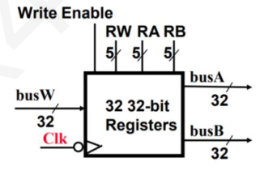
A． 1 B． 2 C． 3 D． 4 答案与解析 答案：B
Ⅰ正确，RA 宽度有5 位，最多可有25 = 32 个寄存器； Ⅱ正确、IV 错误，寄存器堆的读口由MUX 构成，输入是各个寄存器的内容，通过指令中寄存器编号来决定具体是哪个寄存器输出，读操作只跟当前输入和控制信号相关，无需时钟控制，所以读操作是组合逻辑操作，IV 错误。因为采取了busA 和busB 两个输入总线和busW 输出总线，可以实现两个寄存器取数据进行运算然后写入目的寄存器，II 正确。如左图所示，因为三个总线各自传不同数据，不会发生冲突，故无需Y 和Z，只要一个时钟周期（节拍）即可。 Ⅲ错误（务必掌握）多路选择器是一种能够从多个输入信号中选择一个输出的信号转换设备。译码器是一种将二进制编码转换为一组特定输出信号的设备。在寄存器堆中，译码器常常用于地址译码，从而控制对特定寄存器的访问。执行寄存器写相关指令时，指令中的寄存器编号被送到一个地址译码器进行译码，选中某个寄存器进行写入，读出时寄存器编号作为控制信号来控制一个多路选择器，选择相应的寄存器读出。译码器：这里是5-32 译码器，输入端有5 位，输出端有25 = 32 位，记为𝑂0, 𝑂0, 𝑂0, …, 𝑂2𝑛 −1；若输入端对应的二进制值为𝑖，那么输出端只有𝑂𝑖 为1；从图中我们可以看到，这个译码器的32 个输出端分别连接着32 个寄存器，然后跟clk 经过与门相与后作为它们的写使能端口；当需要执行写操作时，将写入寄存器的编号送入译码器的输入端口，这样会有一个输出端口输出为1，等到clk 到来，与之相与后，则会使被选中的那个寄存器的写使能有效，然后，busW 传来的内容便会被写入该寄存器；至于其他寄存器，由于写使能无效，因此不会被写入数据。
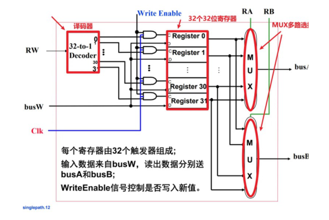
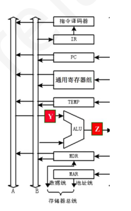
教材第 94 页 第 25 题
CPU 内部，多个部件如果要共享1 条总线，则每个器件与总线之间需要设置1 个常用的器件CPU 控制该器件的状态，实现某个部件与总线的连接或断开。该常用的器件是（ ）。
A． 触发器 B． 多路选择器 C． 三态门 D． 分线器 答案与解析 答案：C
三态门类似于一个开关，开关的连接或断开由三态门的控制端决定，C正确。
教材第 94 页 第 26 题
下面是有关MIPS 架构的beq 指令的单周期数据通路设计的叙述：
A． ①、②和③ B． ①、②和④ C． ②、③和④ D． 全部 答案与解析 答案：A
MIPS 架构的beq 指令的功能是，根据指令指定的两个寄存器内容是否相等(通过做减法来比较是否相等)，确定是否跳转到指定的转移目标地址执行。因此，其通路设计中，ALU的两个输人都来自寄存器堆，ALU的控制信号一定为subu(即ALU做减法)，并且，一定有一个加法器用于计算转移目标地址。因为转移目标地址的计算需要将PC 的内容和偏移量(16 位立即数符号扩展为32位)相加，所以，数据一定会流经符号扩展部件。因此，①、②、③的叙述是正确的，即正确选项为A。
教材第 94 页 第 27 题
下面关于CPU 中的组合逻辑电路的说法中，正确的是（ ）
A． 组合逻辑电路的最终输出一定需要控制信号的参与 B． 在单周期处理器中，指令存储器被设置成组合逻辑电路单元 C． 在多周期处理器中，组合逻辑电路的传输延迟可能大于时钟周期 D． 寄存器组的输入输出是通过组合逻辑电路实现的 答案与解析 答案：B
组合逻辑电路不一定需要控制信号参与，如指令译码器，A 错误。时钟周期本身就是取自所有组合逻辑和时序逻辑部件中的延迟最大值再加一定的缓冲值，所以C 错误，寄存器由触发器组成，属于时序逻辑部件，D 错误。单周期处理器需要在一个时钟周期内完成所有操作，所以取指必须不受时钟控制就能完成，因此指令存储器必须被设置成组合逻辑电路单元，B 正确。
教材第 95 页 第 28 题
某计算机指令集中包含RR 型运算指令、取数指令Load、存数指令Store、分支指令Branch 和跳转指令Jump。若采用单周期数据通路实现该指令系统，各主要功能部件的操作时间为：指令存储器和数据存储器都是3ns;ALU 和加法器都是2ns；寄存器堆的读和写都是1ns。在不考虑多路复用器、控制单元、PC、符号扩展单元和传输线路等延迟的情况下，该计算机时钟周期至少为（ ）
A． 6ns B． 8ns C． 10ns D． 12ns 答案与解析 答案：C
根据题目的描述可知，取数Load是最复杂的指令，在该单周期数据通路中，应该以Load所用时间作为时钟周期。因此，在不考虑多路复用器、控制单元、PC、符号扩展单元和传输线路等延迟的情况下，该计算机时钟周期为取指令时间(3ns)十寄存器堆的读取时间(1ns)+ALU运算时间(2ns)+存储器取数时间(3ns)+寄存器堆写时间(1ns)=10ns。选项C 是正确的。
教材第 95 页 第 29 题
下列有关CPU 中部分部件的功能的描述中，错误的是（ ）
A． 控制单元用于对指令操作码译码并生成控制信号 B． PC 称为程序计数器，用于存放将要执行的指令的地址 C． IR 称为指令寄存器，用来存放当前指令的操作码 D． 通过将PC 按当前指令长度增量，可实现指令的按序执行 答案与解析 答案：C
IR 存放指令，包括该条指令的全部信息，如操作码、地址码、寻址特征等等。
教材第 95 页 第 30 题
下列关于处理器数据通路的叙述中，正确的是（ ）。
A． Ⅰ、Ⅱ B． Ⅰ、Ⅱ、Ⅳ C． Ⅰ、Ⅱ、Ⅲ、Ⅳ D． Ⅰ、Ⅱ、Ⅲ、Ⅳ、Ⅴ 答案与解析 答案：D
在多周期数据通路中，一条指令的执行由多个时钟周期（阶段）来控制，不同指令所含时钟周期数不同，Ⅰ正确；每个不同的阶段数据通路完成不同的功能，所以控制信号在每个时钟周期到来的时候改变其值，Ⅳ正确。在单周期数据通路中，每条指令在一个时钟周期内完成，Ⅱ正确；在指令取出后，指令操作码字段及相关的控制字段送到控制逻辑，由控制逻辑统一得到各个控制信号， Ⅲ正确；每个控制信号被送到相应的控制点，一直作用在数据通路中，每个部件只完成一种功能，不会被多次使用，Ⅴ正确。综上所述，本题答案为D。
教材第 95 页